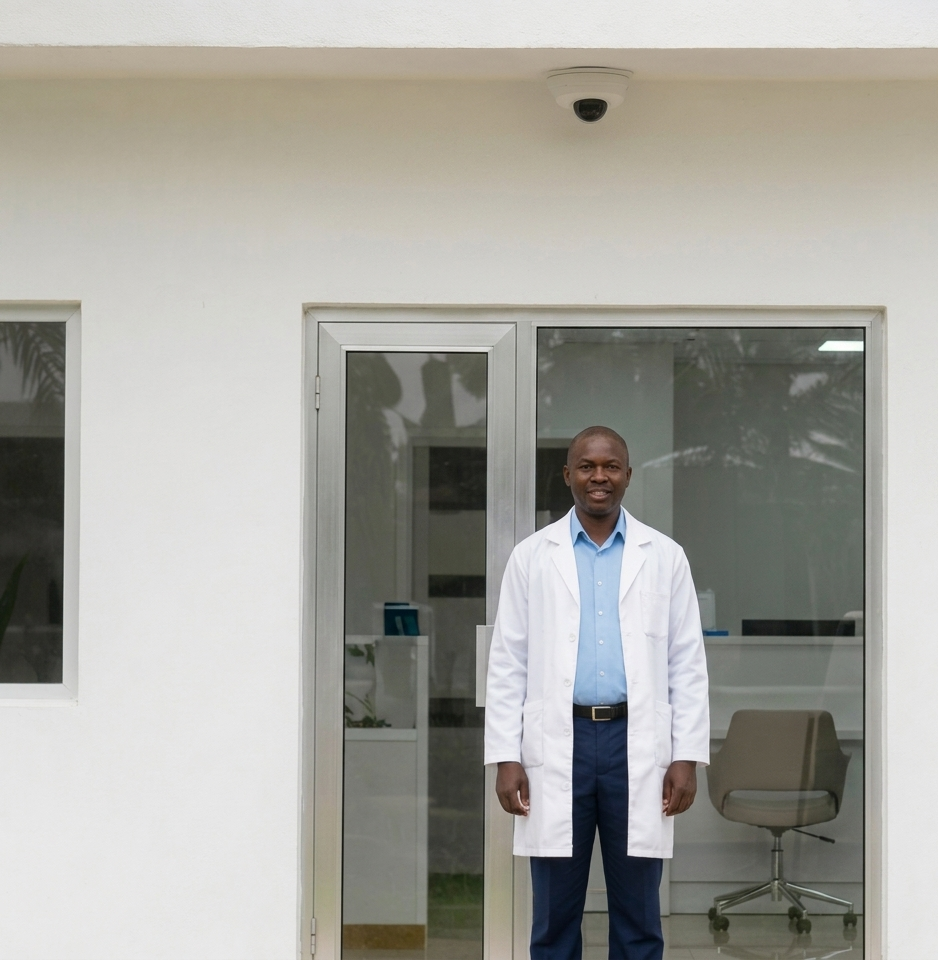
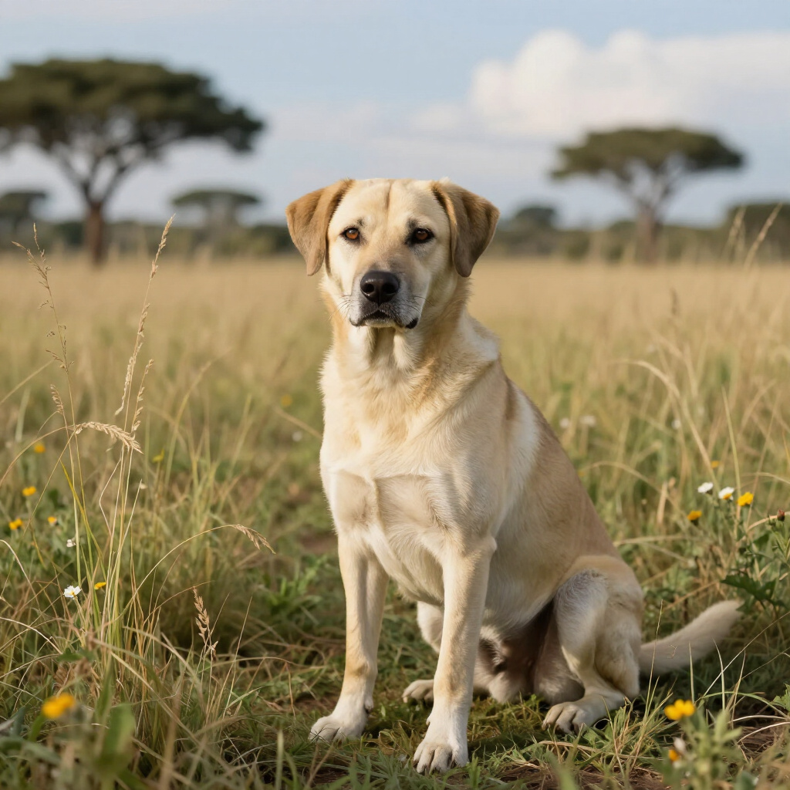

URGENT ASSISTANCE
Emergency Info & Guidance
Rabies is a deadly but 100% preventable disease. Fast action is essential for survival. If you suspect an animal has rabies or if someone has been bitten, follow these procedures immediately.
ToCAWI Emergency Contacts
- Phone: +254 (0) 700 889 001
- Email: thetailsofcare@gmail.com
- Note: Call your nearest health clinic or animal control immediately if available locally.
What to Do If Bitten
- Wash the wound with soap and water for 15 minutes.
- Go to the nearest clinic or hospital immediately.
- Do not kill the animal; try to note what it looks like.
- Follow all professional vaccination advice provided by doctors.
Identifying Rabies Symptoms
- Sudden behavior changes or extreme aggression.
- Excessive drooling and inability to swallow.
- Difficulty moving or progressive paralysis.
- Unusual irritability or fear of water/air.

What to Do If Bitten
Wash Wound
Use soap and water for 15 minutes.
Medical Care
Go to nearest clinic or hospital immediately.
Note Animal
Do not kill the animal; try to note its looks.
Vaccination
Follow all medical vaccination advice.
Spotting the Signs
Rabies is a deadly but 100% preventable with urgent care. If you see these signs in an animal, stay away and report it immediately.

Warning Signs in Animals
- Sudden behavior change (e.g., a shy dog becomes friendly, or a friendly dog becomes shy)
- Extreme aggression or biting without provocation
- Excessive drooling or foaming at the mouth
- Difficulty swallowing or fear of water
- Paralysis, staggering, or falling down